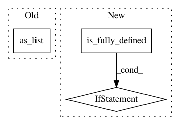

c4fc047e7ec71daa6aa8f71e9cc2ee9e5a3768b6,onnx_tf/handlers/backend/split.py,Split,_common,#Any#Any#,26
Before Change
@classmethod
def _common(cls, node, **kwargs):
tensor_dict = kwargs["tensor_dict"]
x_shape = tensor_dict[node.inputs[0]].get_shape().as_list()
attrs = copy.deepcopy(node.attrs)
axis = attrs.get("axis", 0)
axis = axis if axis >= 0 else len(x_shape) + axis
if "split" in node.attrs:
After Change
split = tensor_dict[node.inputs[1]]
else:
per_part = x_shape[axis] / len(node.outputs)
if input.shape.is_fully_defined():
if int(per_part) != per_part:
raise ValueError("Split can not be evenly divided.")
split = [int(per_part)] * len(node.outputs)
else:
split = [tf.cast(per_part, tf.int32)] * len(node.outputs)
attrs["num_or_size_splits"] = split
return list(
cls.make_tensor_from_onnx_node(
node, inputs=[input], attrs=attrs, **kwargs))
In pattern: SUPERPATTERN
Frequency: 3
Non-data size: 3
Instances
Project Name: onnx/onnx-tensorflow
Commit Name: c4fc047e7ec71daa6aa8f71e9cc2ee9e5a3768b6
Time: 2020-04-14
Author: sdmonov@us.ibm.com
File Name: onnx_tf/handlers/backend/split.py
Class Name: Split
Method Name: _common
Project Name: NifTK/NiftyNet
Commit Name: 17a4601ee5ac1a62f46c586d722c6bb4dc254134
Time: 2017-11-01
Author: wenqi.li@ucl.ac.uk
File Name: niftynet/layer/resampler.py
Class Name: ResamplerLayer
Method Name: _resample_nearest
Project Name: deepmind/sonnet
Commit Name: e164c3574da160fb72fc962947a783fa299424e3
Time: 2019-07-07
Author: tomhennigan@google.com
File Name: sonnet/src/batch_apply.py
Class Name:
Method Name: merge_leading_dims